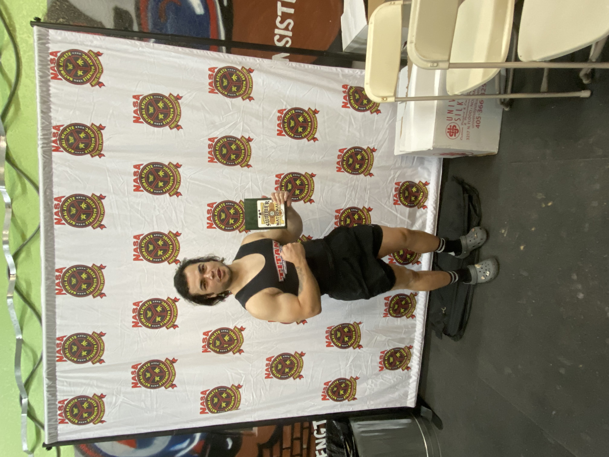

Gym
One of my cherished pastimes involves hitting the gym for powerlifting sessions. I've dedicated nearly a decade to this pursuit, engaging in powerlifting competitions over the past four years.
I initially ventured into weightlifting during my high school years when I enrolled in a weight training class. It was there that I uncovered a genuine passion for lifting. The experience was further fueled by my military service, which sustained my enthusiasm for becoming stronger and pushing my lifting limits.
